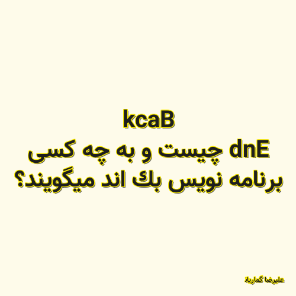

✖

Back End چیست و به چه کسی برنامه نویس بک اند میگویند؟
در دنیای برنامه نویسی به بخشی از یک سایت که در دسترس و دید کاربران قرار نگرفته بک اند و به سازندگان توسعه دهندگان این قسمت بک اند دولوپر می گویند.یاد فای قصد دارد در این قسمت شما را با آن آشنا کند.
علیرضا گماریان 2020-11-29 18:26:00 مطالعه پست گزارش خرابی لینک / محتوای مجرمانه / تغییر محتویات لینک